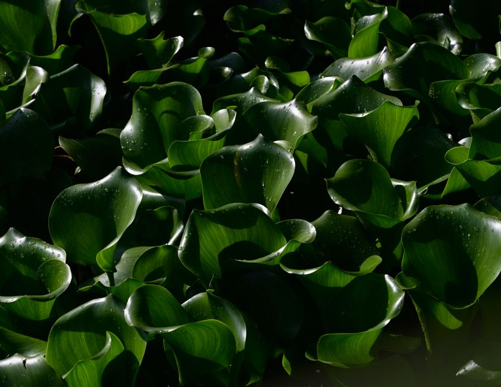

Comment bien arroser ses plantes d'intérieur sans les noyer

Photo: Luis Armando Cuevas / Pexels
Identifier les besoins d'arrosage de chaque plante
Pour commencer, il est crucial de comprendre les besoins d'arrosage de chaque espèce de plante. Certaines plantes, comme les cactées, préfèrent un arrosage sporadique, tandis que d'autres, comme les orchidées, nécessitent un arrosage régulier. Consultez les informations d’entretien sur la boîte de culture ou recherchez le besoin d'arrosage en ligne pour votre plante spécifique.
Utiliser un pot de mesure
Un pot de mesure est un outil précieux pour contrôler l'arrosage. Arrosez une petite quantité d'eau (environ 200 ml) et observez comment elle est absorbée. Si l'eau reste sur la surface du sol, votre plante a besoin d'un arrosage plus fréquent. Si l'eau s'écoule rapidement, cela signifie que le substrat est déjà suffisamment humide.
Tester la humidité du sol
Il est essentiel de vérifier la humeur du sol avant d'arroser. Passez votre doigt dans le sol d'environ 2 à 3 centimètres. Si la terre est sèche à la surface mais humide en profondeur, attendez quelques jours avant de ré-arroser. Si la terre semble sèche à la profondeur de votre doigt, alors il est temps de l'arroser.
Préparer l'arrosage
Utilisez de l'eau à température ambiante. Des variations de température trop importantes peuvent stresser votre plante. Arrosez les plantes à l'aide d'un arrosoir avec une lance longue pour un arrosage ciblé et précis. Arrosez les plantes d'en bas vers le haut, évitant ainsi l'éclaboussure des feuilles et le développement potentiel de mildiou.
Arroser correctement
Arrosez les plantes d'un coup sec et puissant. Les plantes ont besoin d'une quantité d'eau suffisante pour hydrater leurs racines, mais pas de quantités excessives qui pourraient causer la noyade. Si vous avez une plante avec une longue tige ou un grand nombre de feuilles, vous pouvez arroser les feuilles en douceur en les frôlant avec l'arrosoir.
Éviter les excès d'humidité
Arroser trop fréquemment ou avec une quantité excessive d'eau peut causer le développement de mildiou et d'autres maladies. Si vous avez plusieurs plantes dans un espace réduit, assurez-vous que la ventilation est correcte pour éviter l'accumulation d'humidité.
Gérer l'arrosage selon la saison
La fréquence d'arrosage varie en fonction de la saison. En été, les plantes ont besoin d'être arrosées plus fréquemment en raison de la chaleur. En hiver, réduisez le nombre d'arrosages et la quantité d'eau.
Utiliser un système d'arrosage automatique
Si vous voyagez souvent, envisagez l'installation d'un système d'arrosage automatique. Cela vous permet de programmer l'arrosage pour s'assurer que vos plantes sont hydratées en votre absence.
Observer les signes d'excès d'eau
Les plantes qui sont noyées peuvent présenter des signes tels que des feuilles molles, des racines pourries, une décoloration des feuilles et une perte de vigueur. Si vous suspectez que votre plante est noyée, réduisez immédiatement l'arrosage et assurez-vous que la poterie est bien drainée.
Drainer correctement les récipients
Si vous utilisez des récipients sans drainage, assurez-vous qu'un gobelet de drainage est utilisé pour éviter l'accumulation d'eau. Si vous avez des récipients avec un drainage, faites une petite ouverture supplémentaire pour permettre une meilleure drainage.
Résumer les bonnes pratiques
- Identifier les besoins d'arrosage de chaque espèce de plante.
- Utiliser un pot de mesure et tester la humidité du sol.
- Arroser correctement et éviter les excès d'humidité.
- Gérer l'arrosage selon la saison.
- Utiliser un système d'arrosage automatique si nécessaire.
- Observer les signes d'excès d'eau et réduire l'arrosage si nécessaire.
- Drainer correctement les récipients.
En suivant ces conseils, vous pouvez assurer la santé et la prospérité de vos plantes d'intérieur sans les noyer.
Produits recommandés
En tant que Partenaire Amazon, je réalise un bénéfice sur les achats remplissant les conditions requises.